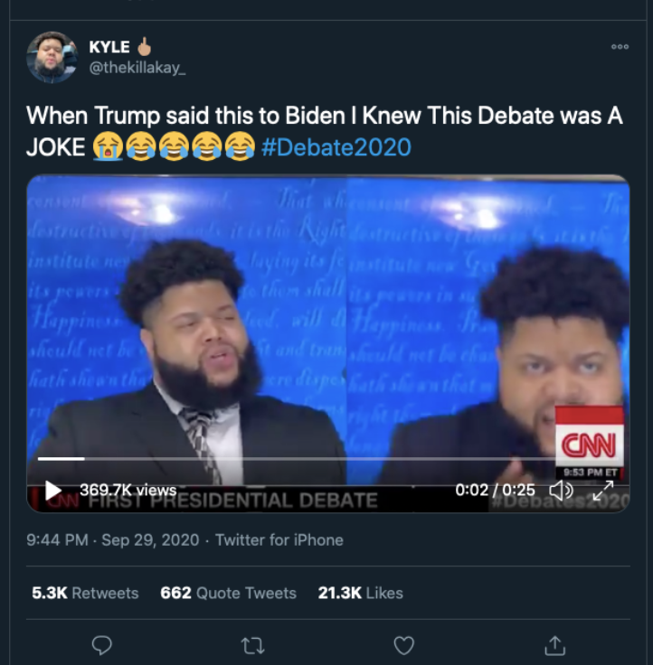
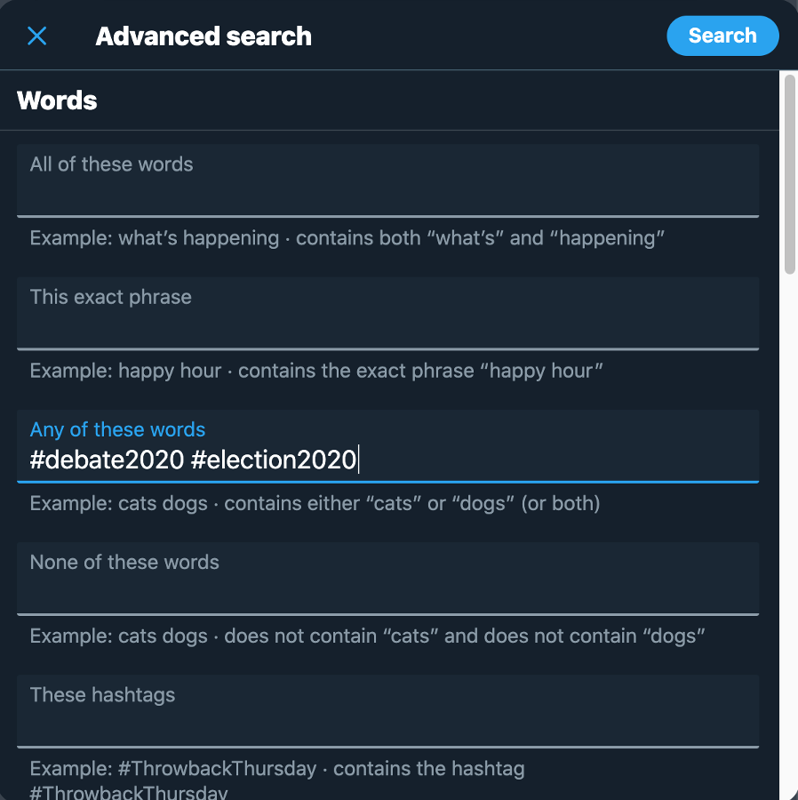
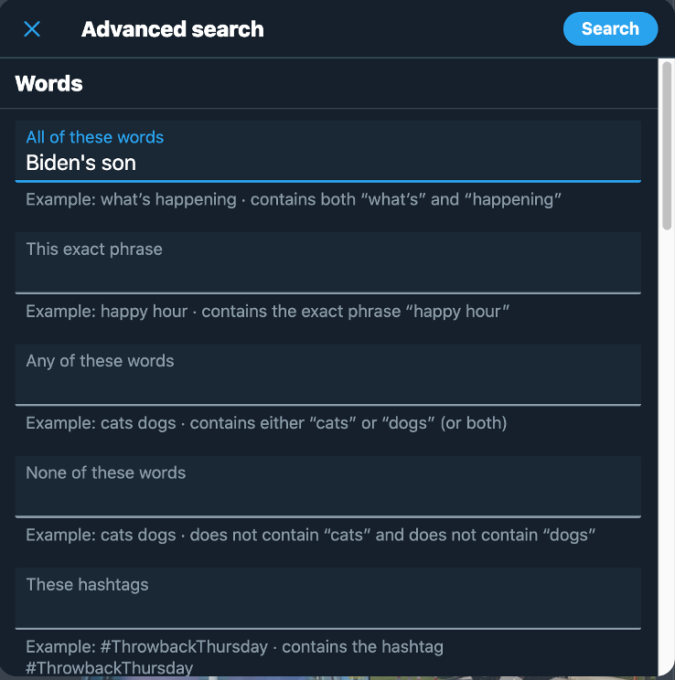

There has not been a debate more distinct and involving more personal behavior and bantering between candidates in a time when the clash of social issues are so heightened in the modern digital age before this year’s 2020 Presidential Election. Joe Biden and Donald Trump have taken “mud-slinging” to a whole new level, and consequently social media such as Twitter eats content like this up.
Twitter has been the most prominent digital media platform for independent individuals to debate freely and express their ideas and opinions. The hashtags are important to be able to track the mass opinions on specific subjects where it becomes more than a presidential debate between two presidential candidates but a breeding ground for debate and expression of personal ideals for Americans. That shows the real characteristic and has a more accurate representation of a monumental event like this, providing better real insight on a micro level. The specificity of the words in the hashtags pinpoint memorable topics during the debate. With the tweets available, we are able to reconstruct the debate piece by piece today and 10 years from now. The hashtags we used for our topic were #debate2020 and #election2020 and the date range we entered was the length of the debates which were 09/29/2020 - 10/03/2020.
Rationale for Searching Tweets
This is an important event because not only does it represent the clash of ideas and show where this country’s going but it also excites a lot of reaction and insight and expression from internet users. The combination of the two hashtags are very important that they are together so it makes sure we get relevant tweets regarding the presidential election of this year and not any presidential election but also only election content on the presidential debate of this year so we can flush out extraneous tweets that involve other aspects of the presidential election race (Ex: campaigning not presented at the debates). It serves as a cross-checking mechanism.
And the date range had to run only during the length debates so we get the tweets of people during the debate in real time and not speculation tweets of the debate before the debate happened or reflection of the debate after the debate happened because realize that people have their most raw perceptions and are inclined to act with less restraint when things happen in the moment. For example, once the winner of the election is revealed after the debate, it greatly affects how people tweet about the debate after it has happened which presents flawed reflection in which we are not interested in. We want to evaluate their true selves.
Different Perspectives
As Seen via Tweets
The selected hashtags are used by people posting on Twitter during the selected date range very vaguely and not very specifically. People use the selected hashtags when talking about anything during the debate, but because the nature of a debate is to disagree with the opponent along with the fact that we knew about the excessive and explicit bantering, we speculated that the debate itself would be composed of back and forth insults, changes of behavior, and many actions and complementary reactions. Therefore, we only needed these two hashtags and were able to find a lot of content on the behavioral aspect of the debate.
Pro-Trump Tweets
Twitter: A Debate Platform for Social Media Users (Figure 1)
Biden & the MSM think theyve set perfect trap for Trump tonite, putting him on defense over his tax returns,but Trump can easily pivot to offense by reminding voters Biden's spent 50 yrs in Wash corruptly cashing in w his son & brother while Trump's been working in private sector
Trump supporter is strategizing for Trump in the debate by bringing up a past Biden incident and also berating his family. What I have noticed and is exemplified by this tweet is that Twitter is a much more political and debate-oriented platform than any other social media platform. Lots of judging and scoring for this topic on Twitter.
Science Behind the Character Limit (Figure 2)
Biden: “Antifa’s an idea, not an organization.” Trump: “you gotta be kidding me.” Point: TRUMP
Based on user profile, seems rather neutral and more supportive of patriotism rather than either candidate ideal but the text structure of the tweet is very dialogue-like. Shows a lot of back and forth and scoring and judging between users : “Point: TRUMP”. However, the all capitalization of TRUMP deserves some attention in that it is a possible indication of slight emphasis on support of this candidate, showing her leaning towards trump.
Overall, the platform of Twitter is very common for different text structures to be displayed through each tweet and that element showcases emotion behind every Tweet. It speaks to how people tend to feel more open to being authentic on Twitter due to the character limits and therefore, forces a more blunt and concise/explicit voice of opinion which is why Twitter makes for such a good platform for debating topics. Perhaps Twitter is more an outspoken platform for expression of ideals. The character limits per post also restrict space for including content so users tend to use different types of digital media strategies such as manipulating text structure to get their entire point across because they cannot do it with the words themselves, so they have to get more creative if they want hidden or double meanings behind their posts. This speaks to the advantages in creativity but disadvantages in transparency of Twitter’s short posting format, justifying Twitter threads and retweets and subtweeting for further elaboration.
The short tweet-formatting invites users to voice their opinion more openly because the development of Twitter threads, sub and retweeting allows for users to address different confrontations and replies to their opinions with context in an organized manner.
Pinning tweets also allow for users to showcase what they think and the fact that it is pinned shows a level of passion and faith towards that opinion in their pinned tweet.
These posts offer two main perspectives on out selected event: Pro-Biden and Pro-Trump; as well as two sub-perspectives: neutral but patriotic, and inconclusive.
Word Choice (Figure 3)
“There is no good excuse for Joe Biden’s ethical blindness about his son’s and his brother’s sleazy foreign profiteering.” https://t.co/OGWjrUMTOP
This clear Trump supporter wants to point out the double standard and highlight a fact attacking Biden. Only indication that she wasn’t just trying to be fair as a neutral spectator is the adjectives used in the tweet: “blindness, sleazy”.
Pro-Biden Tweets
Media Strategies (Figure 4)

On the surface level, the caption seems neutral and attacks neither candidate but rather the manner of the debate with a parody based on a real insult of intelligence that Trump used on Biden. But on a deeper level, the video seems to be mocking Trump and supporting Biden. There is a Hidden meaning that reflects the manner of the debate onto Trump. The author uses different layers of media to complement each other and forces the user to get a deeper engagement of the tweet and the debate in general.
This comes from a very progressive, liberal, and pro-Biden media source. This tweet was one of Trump's biggest falls and was a vital factor that played well in Biden’s favor and swayed a lot of people’s thoughts or reinforced some.
This clear Trump supporter wants to point out the double standard and highlight a fact attacking Biden. Only indication that she wasn’t just trying to be fair as a neutral spectator is the adjectives used in the tweet: “blindness, sleazy”.
This comes from a pro-Biden user and it highlights the child-like behavior of Trump while focusing on Biiden’s maturity and leadership
Limitations of Twitter
Unless if you have large following, the value of your tweet is not evaluated accordingly because of your small following, which undervalues effective and insightful tweets and gives a disproportionate advantage of exposure for those who have already had a large following even if they do not provide a much good insight or know very little of political knowledge (Ex. celebrity vs an actual politician with not as much notoriety). Due to the fact the debate was more for entertainment value, a lot of non-political, inexperienced individuals tuned in (celebrities) and diluted the tweets of political insight with their reactions.
Limitations of Advanced Search
Even with Advanced Search options, we realized that there is no way to filter out specific time of tweets so we couldn't search for tweets during the time of the specific event so we had to scroll to find tweets about the debate during the debate and go through any extraneous tweets.
Additionally, there is no definition of what an effective amount of likes or retweets is considered. There is no way of quantifying and defining trending tweets. We wondered What makes a trending tweet a trending tweet? Therefore, we were forced to make an arbitrary decision and selected tweets with at least 1000 likes and 1000 retweets.
Lastly, we were forced to not use too many hashtags because if we did, then Twitter focused the scope in too much, providing only Tweets that included all of the hashtags. Therefore, we also used keywords and used the “Includes Any of these words” function by searching up specific and big topics that Biden and Trump insulted each other on like “son” to pinpoint a broad selection of tweets reflecting on Trump insulting Biden's family. Finding that perfect balance between a broad, inclusive search and an exclusive selection of relevant tweets was quite difficult with just hashtags, but keywords and the inclusiveness of the “Any” aspect of the keyword search function made it a lot easier to search for tweets regarding the event based on specific topics to get the insight that we really wanted (refer to Figure 3).
Figure 7: Advanced Searches

no need for hashtags as too few results

advanced search: must include “Biden’s son”, >1000 likes, 09/29/2020 - 09/30/2020
Key Concepts from Class Readings
The concepts of Positive, Negative, and Explanatory Themes summarize the reasoning behind the way Twitter users interact with their social media platform during specific events.
In Noah Arceneaux and Amy Schmitz Weiss’s article “Seems stupid until you try it: press coverage of Twitter, 2006-9”, the concept of brevity was addressed as a societal educator, “the blog Digital Digs wrote: ‘the general consensus...was that there was a potential to teach concision in the 140 character limitation of the tweet. There was also extensive comparison to the haiku’ (Digital Digs, 2008). In this perspective, Twitter could actually improve one’s writing ability, rather than corrupt it” (Arceneaux, Weiss 1268). The limitations on the character count for every tweet has speakers new heights of creativity and improved users’s execution of delivery as seen in the different parodies, memes, and structure of tweets of the 2020 Presidential Debate. Described in Arceneaux and Weiss’s article, the speed of information that can flood Twitter has also contributed to why it has much more content and supports the extensive shift of focus from news outlets to social media platforms for information in the modern age. Therefore, one is somewhat likely able to gain a much better perspective on the debate by going on Twitter than reading about it in the news, ensuring a faster grasp of the debate.
The concept of new sensibility established in Arceneaux and Weiss’s article describes the forming of a new sense of social awareness that internet users start to develop when they become more social-media-savvy. When discussing the characterization of Twitter, the authors mention the words of a New York Times Writer by stating, “Thompson characterizes this new form of social awareness as ‘ambient intimacy’ through which we acquire a greater awareness of many individuals, a group far larger than what we could keep up with through personal contact” (Arceneaux, Weiss 1269). This explanation of ambient intimacy describes why Twitter is such a hotspot for debates and political argument as well as social causes. With this new sense of social awareness, the authors also recognize the concept of civic use where Twitter allows for “embracing the vision of an expanded participatory democracy...Outside of benefits to the traditional, two-party system, another variation of the political theme dealt with the ways various groups could use Twitter to mobilize around specific causes” (Arceneaux, Weiss 1269). Social media platforms such as Twitter brings a sense of membership into political affairs that many users exercise for their beliefs.
Moreover, the development of social awareness and a sense of civic use lead to the negative theme concept of information overload. In regards to my previous analysis of twitter's limitations on users and their insight being diluted by those who have a larger following and much more notoriety, Arceneaux and Weiss also concur, “According to this argument, artists who released a novel or album every few years could carefully craft their message as opposed to publicly airing updates about every step in the artistic process: ‘Twitter floods the market with private thoughts of public figures, most of which aren’t really worth articulating’ (Kroth, 2009)” (Arceneaux, Weiss 1269). Due to the high entertainment value of the debate, many people tuned into watching the insulting manner between candidates more so than the actual political debate itself, attracting many public figures who have very little insight on anything of political affairs such as celebrities. Their reaction tweets hold much more weight on the Twitter platform and attract the attention of many more users than a very important Tweet that could potentially change the minds of voters from a regular, politically-sound individual.
Speaking of Civic Use, because many users mobilize around specific causes, keywords and hashtags that we used involved a lot of those causes, such as using Biden’s sons names to search for relevant tweets about the corruption that may have gone down in the Biden family addressed during the debate.
Conclusively, we referred to the three processing priorities to guide our work with “social fonds”. As stated in the article, “#Cuéntalo: the path between archival activism and the social archive(s)” by Vicenç Ruiz Gómez and Aniol Maria Vallès, the three processing priorities are:
“a participative model of archival processing is essential for its collaborative generation;
it is necessary to adopt proactive measures to ensure free and democratic access in the mid- and long term; and
given its massive nature, it is vital to be equipped with tools that automate the analysis (evaluation, description) and use of the information.” (Gómez, Vallès 8).
We really emphasized the last process and focused on learning the search tools and functions to see the relationship they have with hashtags.